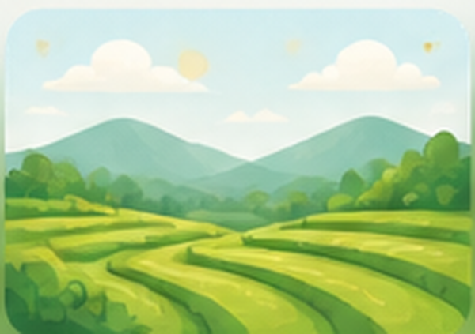
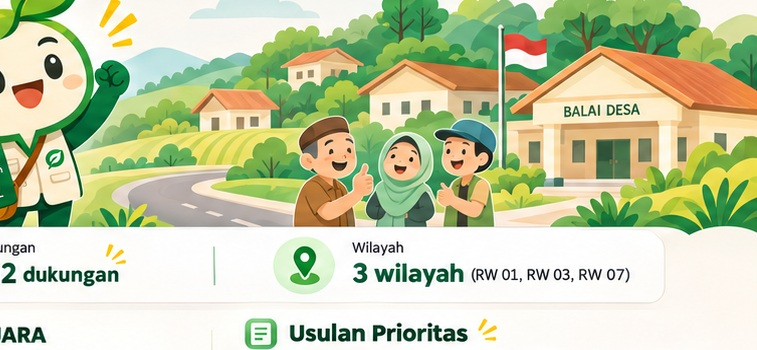
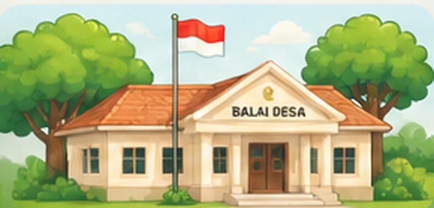

Batas mutlak APBDes murni 2027
Total alokasi Rp 285 Juta (95%)
Cadangan tanggap darurat (5%)
RW 01, RW 03, RW 07 terwakili
Komparasi: Rekomendasi Algoritma vs Rancangan Musyawarah
Bandingkan bagaimana pagu dialokasikan. Proyek yang berbeda ditandai dengan bingkai putus-putus dan tanda ≠.
Mengapa Proyek Talud RW 07 (Urgensi 10/10) Ditunda oleh Sistem?
Usulan Talud Penahan Longsor Tebing RW 07 dinilai memiliki urgensi darurat maksimal (10/10). Namun biayanya mencapai Rp 220 Juta (73.3% dari seluruh pagu desa). Jika dipaksakan masuk anggaran murni, pagu desa yang tersisa hanya Rp 80 Juta sehingga 3 kebutuhan vital lainnya (Jalan SDN 03, Drainase, dan Lampu) terpaksa dibatalkan sekaligus.
Daftar Usulan Prioritas Periode 2027
4 usulan masuk alokasi rekomendasi Knapsack 0/1 berdasarkan data voting warga

Normalisasi Drainase yang Sering Banjir

Perbaikan Jalan Berlubang Depan SDN 03
Jembatan Kecil Penghubung ke Sekolah

Lampu PJU Jalan Setapak RW 07
Dampak Terhadap Pemerataan Anggaran Antar-Wilayah
Normalisasi per 1.000 penduduk memastikan RW kecil terpencil tidak terabaikan
RW 01 telah menerima alokasi dominan di tahun lalu, sehingga skor pemerataannya disesuaikan.
Mendapatkan perbaikan jalan sekolah dasar untuk akses anak-anak.
Pemerataan optimal terwujud: 3 proyek prioritas (drainase, jembatan, PJU) terealisasi.